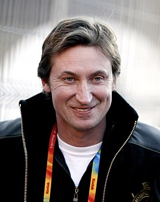

Wayne Douglas Gretzky (Brantford, Ontario, Canadá, 26 de enero de 1961) es un exjugador profesional canadiense de hockey sobre hielo. Está considerado como el mejor jugador de hockey sobre hielo de todos los tiempos.1 Fue un prodigio desde niño, se convirtió en un profesional en 1978 a la edad de 17 años en la World Hockey Association (WHA), liderando luego de eso una larga carrera en la NHL. Tuvo 40 récords en temporadas regulares, 15 récords en los playoff, ganó 4 copas Stanley con los Edmonton oilers, ganó 9 Trofeos Hart y 10 Trofeos Art Ross. Él es el único jugador en tener más de 200 puntos en una temporada. En 1999 se retiró de jugar y se convirtió en el director Ejecutivo de la selección canadiense de hockey sobre hielo durante los Juegos Olímpicos en Salt Lake City del 2002. También se hizo el copropietario de los Phoenix Coyotes en el 2000 y después del cierre de la NHL durante la temporada 2004-05 pasó a ser su entrenador.
Los abuelos paternos de Gretzky eran inmigrantes polacos que llegaron a Canadá a principios del siglo XX desde el pueblo de Maguilov de la Rusia Imperial (ahora Bielorrusia). Fue el clásico niño prodigio. A la edad de 10 años había anotado 378 goles y 139 asistencias en apenas 85 juegos con el Narofsky Steelers. A los 14 años en parte para avanzar en su carrera y en parte para alejarlo de la presión que tenía en su ciudad natal, los Gretzky desafiaron las reglas canadienses del hockey aficionado para que Wayne ganara el derecho a jugar en otra parte, esto fue rechazado en ese momento. Más tarde los Gretzky ganaron y Wayne se trasladó a Toronto jugando para los Toronto Nationals. Ganó como novato del año en la liga menor de hockey del metro b en 1975-1976, con 60 puntos en 28 juegos. Al año siguiente con solo 15 años tenía 72 puntos en 32 juegos con los Seneca Nats. Además de esto, firmó con su primer agente. A pesar de su fama, Gretzky fue puenteado por dos equipos en el OHA Midget Draft en 1977. Oshawa escogió a Tom McCarthy, y los Niagara Falls escogieron a Steve Peters de segundo. Con la tercera selección los Greyhounds escogieron a Gretzky, aunque Walter (su padre) había escrito al equipo para avisarles que Wayne no se movería a Sault Ste. Marie, una localización norteña de Ontario que inflige un horario de viaje muy pesado a su equipo. Él jugó una temporada con la Liga de Hockey de Ontario a los 16 años con los Greyhounds. Mientras jugaba para los Greyhounds, comenzó a usar el número 99 en su jersey aunque el realmente quería usar el número 9 -por su héroe Gordie Howe- pero este ya era usado por su compañero Brian Gualazzi. Su entrenador Muzz MacPherson le sugirió que usara el número 99 y así lo hizo.
Después que la World Hockey Association fue absorbida por la NHL en 1979, Los Edmonton Oilers y otros 3 equipos se unieron a esta. Debido al éxito de Gretzky en la WHA lo llevó a estar dentro de la NHL.
El dominio de Gretzky durante toda su carrera fue atribuido a su tiempo de entrenamiento (por su cuenta, por lo menos de 4 a 5 horas al día) y también que él era ya un prodigio natural. A los 16 años, las habilidades de Gretzky ya eran descritas como " un toque mágico, " decían que tenía un tiro bueno, que movía el puck muy bien y nunca se marchó, jugando " ambas formas " (defensa así como ofensiva) y un jugador que cualquier equipo podría construir alrededor su club de hockey. También se decía que " parece tener ojos detrás de su cabeza". Para el momento de su retiro Gretzky era conocido por quedarse tras la red, la cual tuvo el sobrenombre de "su oficina" porque "él iba a trabajar allí", pasándoles el puck a compañeros de equipo como Luc Robitaille o Kurri o saltando rápidamente para un gol recirculante. En el honor a esto, para su último juego había dos "99" grandes pintados sobre el hielo detrás de la red. La carrera de Gretzky señala el total de 3239 (2857+382) puntos y los juegos de partido de desempate combinados son ligeramente más altos que de los de 6 hermanos Sutter combinados (3209, 2934+275).
